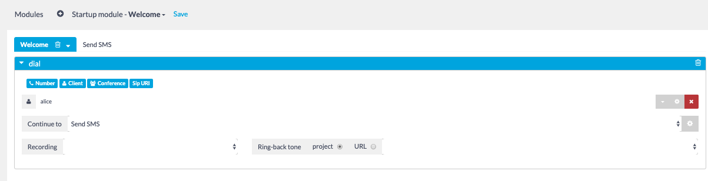
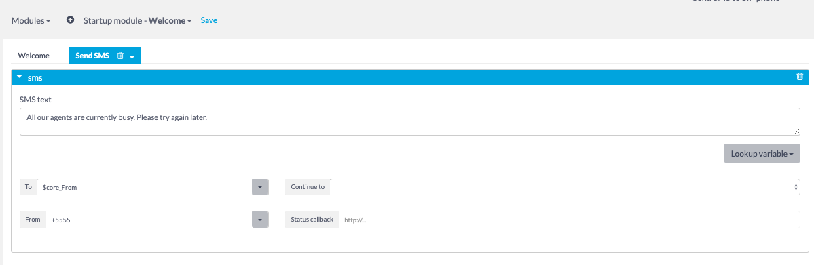
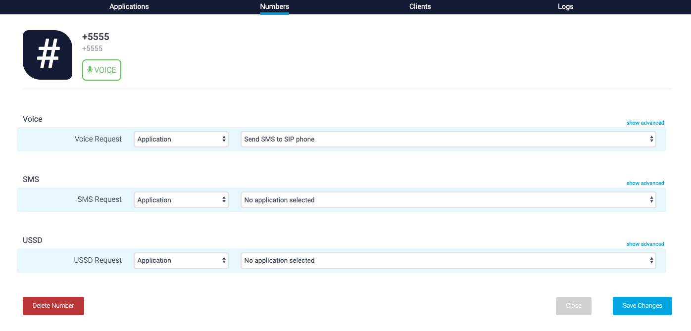
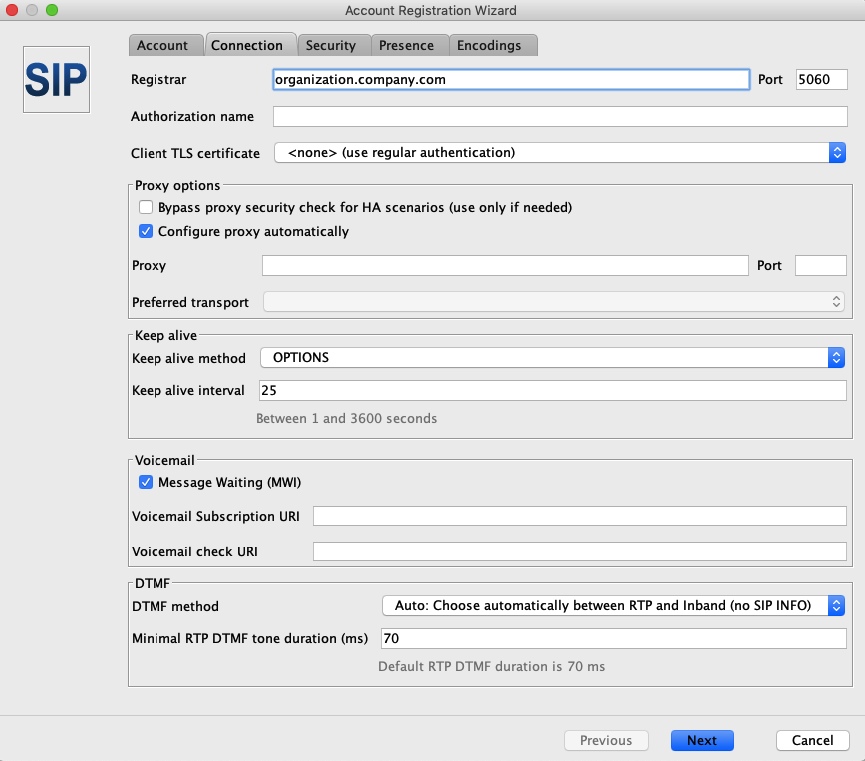
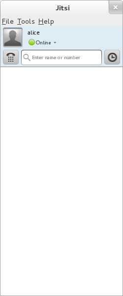
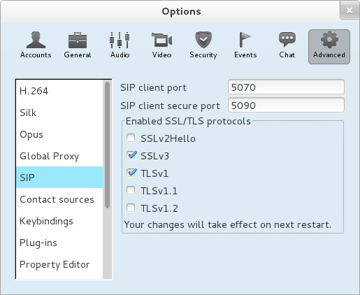
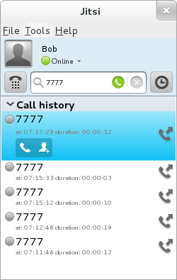

Send SMS to a SIP Phone
In this tutorial, you will learn how to send an SMS from Visual Designer to a Jitsi SIP phone.
Requirements
-
An active Restcomm Cloud account. If you do not have one, you can sign up.
-
Jitsi SIP phone running on your local machine. (Latest version of Jitsi)
Creating an SMS application with Restcomm Visual Designer
-
Log into your Restcomm Cloud account and navigate to Applications
-
Choose to ”Create a Visual Designer Application”
-
Select the ”Blank” template from the list available in the Template Gallery
-
Name your application, set its
Typeto SMS and click “Create”
Next, create two application new modules called Welcome and Send SMS
-
Remove the default Say verb
-
Drag and drop the Dial Verb into the Welcome module.
-
Drag and drop the Client noun to the space below the noun list and enter the name alice
-
You must create the Send SMS module in order to be able to select it in the Continue to drop down list.
-
The Welcome module should be similar to the screenshot below.

Next, you need to create the Send SMS module
-
Drag and drop the SMS button on the left hand pane into the new module you have just created
-
Type the SMS message you will like to send in the text area of the Say verb.
-
Enter alice in the To field
-
Enter any number in the From field
-
Leave the rest of the field as default
-
The Send SMS module should look like the screen below
-
Save the project by pressing the Save button at the top of the page

Binding your application to a phone number
-
Head back to the Restcomm Console and navigate to “Numbers”
-
Search for available phone number in the region you are interested in
-
Click on “Register number”
-
Select your application from the Voice URI drop down
-
Click “Save”

Configuring the Jitsi SIP phone
In this section, you will configure Jitsi SIP phone to use the Restcomm application you have just created and receive the SMS message you configured.
-
Start two instances of Jitsi from the command line.
-
The first instance can be started by typing jitsi
-
Second instance jitsi - -multiple
Configure instance with alice account
-
Click on the menu "Tools" → "Options"
-
Click on the "Add" button at the bottom of the window
-
In the Network, select "SIP"
-
Set the "SIP id" to
alice -
Set the password to 1234

-
Click on the "Advanced" button
In the Account Registration Wizard, go to the Connection tab
-
Enter $DOMAIN as the Registrar IP address and leave the port as default
In the section Proxy Options, check to Configure proxy automatically.

-
At the bottom of the window, press Next, then, Sign in
-
You should now see that alice is registered when you set the account to online.

Next, you will need to configure the second instance with user Bob. The configuration is similar to the one used for Alice.
How to check: In the Jitsi instance on which user Alice is configured,
-
Click on the menu Tools → Options
-
Click on the tab Advanced, on the left pane, select SIP
-
That will show the screen below:

Testing your SMS to a SIP phone application
You can now make a call from Bob to Alice. From the Jitsi SIP phone on which Bob is registered. make a call to 7777, the number attached to the SMSTest application.
See screenshot below

The Jitsi phone to which Alice is connected will ring.
Answer the call and then hang up. The SMS message you entered in the Send SMS module of the Visual Designer will appear in a pop-up window similar to the one below. Note that the number +5555 appears as the source of the SMS message.